古风水墨修仙MMO游戏 · 全套界面设计系统
以中国传统水墨画为视觉基底，融合黑白灰水墨晕染、朱红印章点缀、暗金云纹边框与仿古宣纸质感， 构建一套兼具东方意境与游戏功能清晰度的修仙MMO UI设计系统。
统一视觉语言，贯穿全套11个界面
古风水墨画，传统丹青晕染技法，留白透气，意境悠远。
水墨黑白灰为基底，朱红印章为强调色，暗金云纹为装饰色。
标题用毛笔行书书法体，正文用小楷瘦劲字体，层级清晰。
仿古宣纸面板，细墨线分隔，暗金云纹回纹边框，四角角花。
从登录到进入游戏的完整体验链路
水墨山水背景 + 卷轴式登录面板，建立第一印象
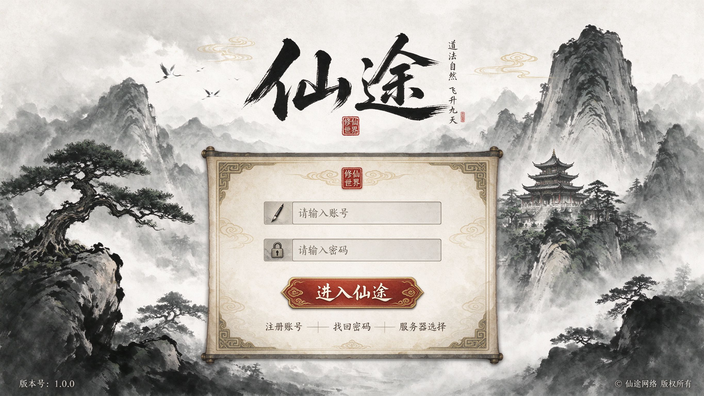
水墨长卷山水，太极进度条，修仙小贴士
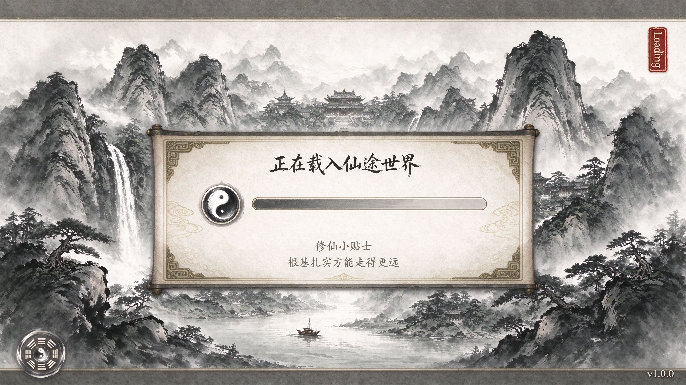
左侧角色大预览，右侧定制面板，360度旋转
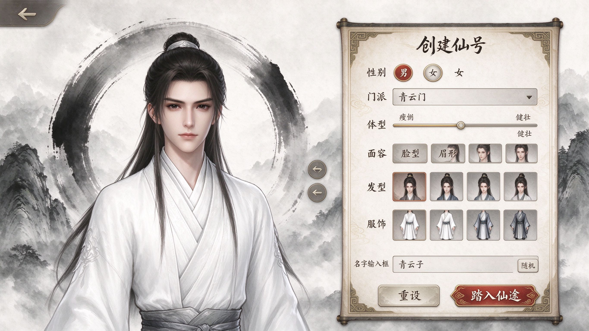
进入游戏后的核心HUD布局
全功能战斗界面，左上状态栏、右上小地图、左下聊天、底部技能栏、右下系统菜单
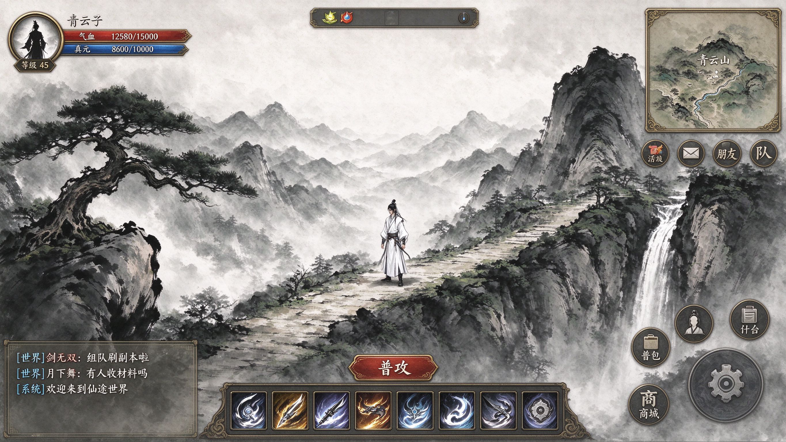
背包、属性、技能树三大成长系统
"乾坤袋"卷轴，30格物品网格+右侧详情区
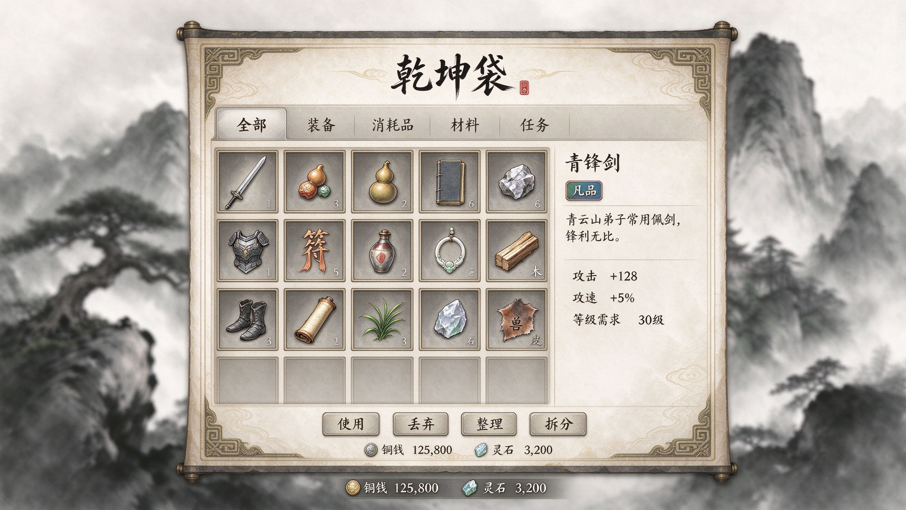
立绘+装备槽+双列属性+深层天赋
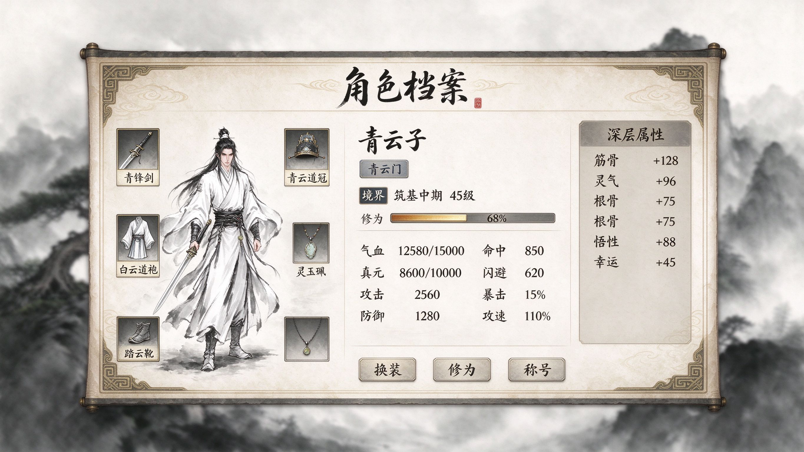
四系天赋网状节点，前置依赖解锁路径
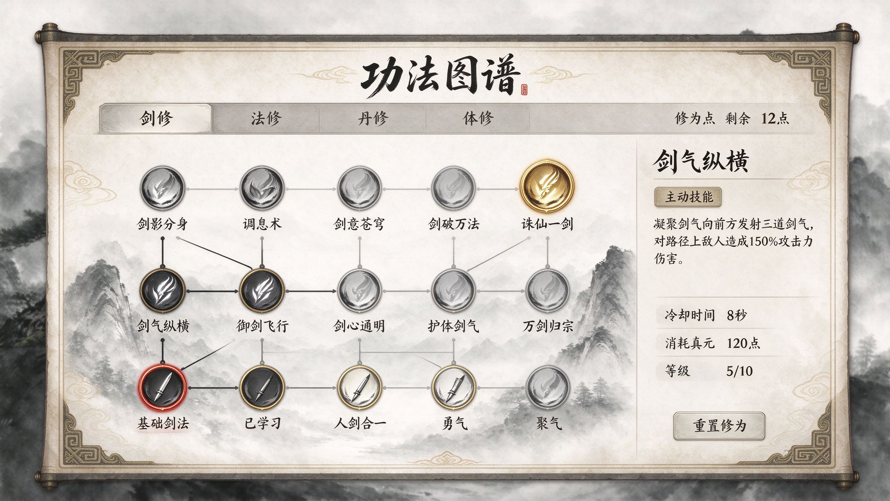
任务录列表与详情双栏布局
左侧任务列表+右侧任务详情/目标/奖励
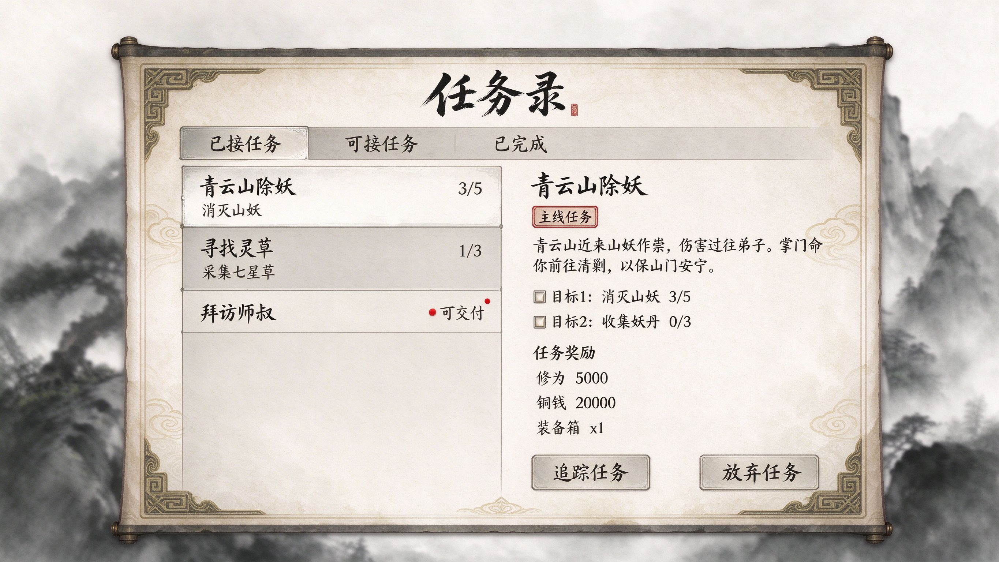
商城与拍卖行，双轨经济循环
左侧分类导航+12格商品卡片，热卖角标
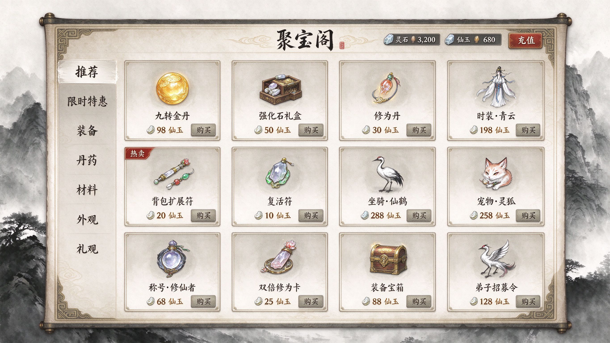
商品列表表格+筛选搜索+出价/上架
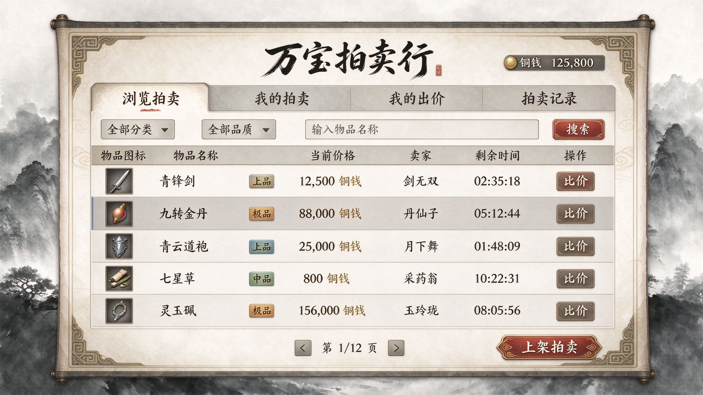
卷轴式全图，八大区域标注
展开的水墨山水长卷，当前位置定位
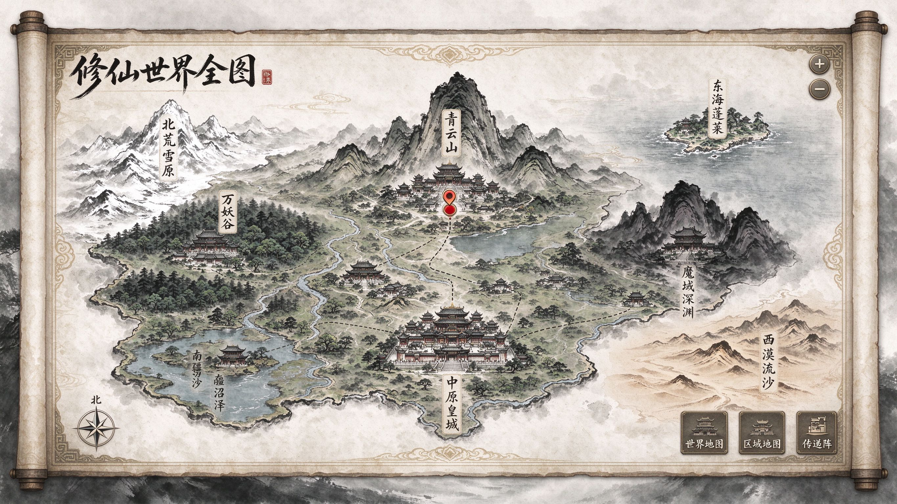